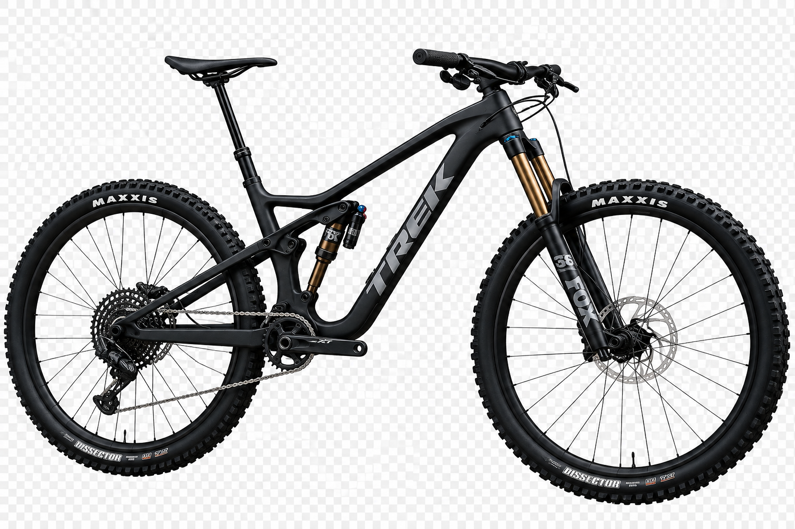
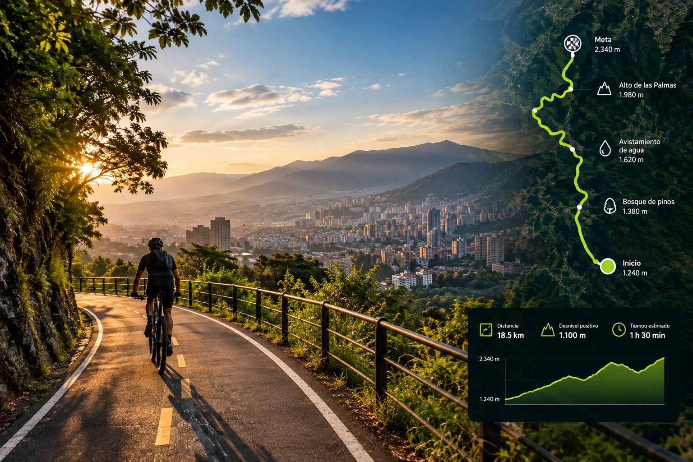

Bienvenido al sitio web de rueda libre,
Bienvenido al sitio web de rueda libre,
aqui podras encontrar todo lo que necesitas para alquilar una bicicleta.
Ir a la ubicacion

Somos una empresa dedicada al alquiler de
biciletas para todos los gustos y terrenos en la ciudad de medellín
servicio de alquiler de bicicletas. se incluye casco y candado
Contamos también con recorridos guiados por toda la ciudad.
Mantenimiento preventivo y correctivo. Venta de repuestos y accesorios de lujo.
Siempre se hace una revision en presencia del cliente del estado de la bicicleta
antes y despues del alquiler de forma que cualquier daño en la bicicleta sea asumido y pagado por
por el cliente
